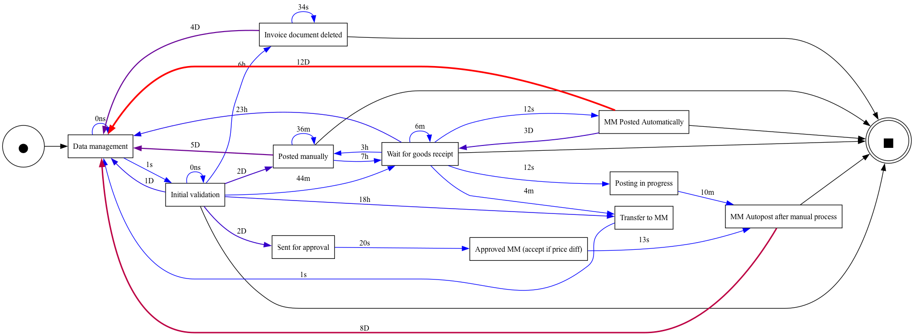

ZNB1 Invoice Flow
A short look at where the purchase-order value sits across the eleven SAP PO types, then the full analysis (workflow, KPIs, control and capability, focus) for manual orders, ZNB1, only.
- PO value per SAP category
- ZNB1 key findings
- Data
- 1 · Workflow
- 2 · KPIs
- 3 · Control & capability
- 4 · Focus
OverviewTotal PO value per SAP category
The value is counted once per purchase order (PO_ID), using Case_Invoice_Value_NOK. That field holds the same amount on every row of a PO, so it's the PO total, not the value of a single invoice.
| Code | PO type | POs | Total PO value (NOK) | Share of value | Mean per PO (NOK) | Median per PO (NOK) | |
|---|---|---|---|---|---|---|---|
| ZJD1 | Normal order | 5,519 | 6,898.0M | 51.2% | 1,249,869 | 464,106 | |
| ZNB1 | Manual order | 4,753 | 5,510.3M | 40.9% | 1,159,328 | 327,395 | |
| ZJD3 | Automatic order | 953 | 542.5M | 4.0% | 569,289 | 169,699 | |
| ZNB4 | Third-party order Type 3 | 26,349 | 232.7M | 1.7% | 8,832 | 2,605 | |
| ZNB3 | Third-party order Type 2 | 20,336 | 95.1M | 0.7% | 4,677 | 3,771 | |
| ZNB2 | Third-party order Type 1 | 92,768 | 94.5M | 0.7% | 1,019 | 300 | |
| NB2 | Return to vendor | 34,669 | 68.0M | 0.5% | 1,961 | 544 | |
| ZNB6 | Third-party order Type 4 | 797 | 11.4M | 0.1% | 14,336 | 7,725 | |
| ZRPC | Return order Type 1 | 364 | 5.4M | 0.0% | 14,755 | 3,993 | |
| ZNBF | Transportation order | 34 | 3.6M | 0.0% | 106,871 | 122,537 | |
| ZRPM | Return order Type 2 | 5 | 2.3M | 0.0% | 452,962 | 199,065 | |
| All PO types | 186,547 | 13,463.9M | 100% | 72,174 |
Two PO types hold almost all the money. ZJD1 (6,898.0M NOK) and ZNB1 (5,510.3M NOK) together make up 92% of the 13.46B NOK total, from only 5.5% of the POs. A ZNB1 PO is worth 1.16M NOK on average (median 327k). The third-party types (ZNB2–4) have most of the volume but small values.
The rest of this report covers ZNB1 (Manual order) only.
ZNB1 key findings
of 2% cash discount is missed on 1,687 of 12,874 posted invoices (13%) that took more than 10 days from goods receipt to posting.
of ZNB1 invoices are posted manually, after a median of 5.3 days. They cause 93% of the missed discount. Automatically posted invoices are done the same day.
of ZNB1 invoices are sent to the manual control queue (CTRL1) already at validation, so the manual posting is decided up front, not after a failed auto-post.
variants for 4,753 POs. Mostly because a PO holds 2.9 invoices on average and their steps interleave; real rework within an invoice is only 6%.
against the 10-day SLA, per invoice. ZNB1 isn't capable on any measure, and none of its three per-invoice KPIs is in statistical control.
of all manual work in accounts payable comes from ZNB1, although it has only 2.5% of the POs.
Data preparationWhat the log holds for ZNB1
A case is one purchase order (PO_ID). A ZNB1 PO often receives several invoices: each new SAP_PO_No starts again with Data management. 53% of ZNB1 POs hold more than one invoice, 13,776 invoices in total (2.9 per PO). 902 invoices were never posted and are left out of the lead-time and discount figures.
- Events are ordered by timestamp, then
Event_ID. Throughput times are in fractional days from the timestamps. - The log ends at posting, not payment. "SLA met" means posted within 10 (or 30) days.
- Case volume falls sharply in October and November 2025 across all PO types. That looks like an extraction effect and shows up in the control charts.
Clock start at goods receipt. For ZNB1 the payment term is assumed to start at goods receipt. The log has no goods-receipt date, so the first Wait for goods receipt event with object code WAIT_GR is used as a proxy. 6,974 invoices (51%) have that step. The others, mostly the manual-queue route, keep the clock from their first event. With the clock from arrival instead, 3,071 invoices would be late and 27.3M NOK of discount missed (upper bound).
Step 1Understand the ZNB1 workflow
Every invoice starts with Data management → Initial validation. At validation SAP sets a routing code that picks the road. On the goods-receipt road (WAITGR, 53% of invoices) the invoice waits for the goods receipt and usually posts automatically; 30% of these are still posted manually. On the manual road (CTRL1, 44%) it goes to the manual control queue and waits for a clerk to post it. A few go via Warehouse Management first (ZWMGRW, 0.8%) or are deleted (DELE, 2.7%).
ZNB1 uses 22 different activities. The top variant covers 30% of the POs, the top five 52%, and it takes 211 variants to cover 80%.


Each box is an activity with how often it occurred, and each arrow counts how often one activity directly followed another. The arrow from Initial validation to Posted manually is the manual road. Arrows from MM Posted Automatically back to Data management are the next invoice on the same PO, not rework. The performance map uses the same layout but shows the median time on each arrow, so it shows where invoices wait.
How often each activity occurs
| Activity | POs containing it | Events |
|---|---|---|
| Data management | 100% | 14,134 |
| Initial validation | 100% | 14,150 |
| Wait for goods receipt | 72% | 7,626 |
| MM Posted Automatically | 59% | 4,660 |
| Posted manually | 49% | 7,628 |
| MM Autopost after manual process | 9% | 586 |
| Invoice document deleted | 5% | 459 |
| Sent for approval | 5% | 454 |
| Posting in progress | 5% | 275 |
| Approved MM (accept if price diff) | 4% | 273 |
| Transfer to MM | 3% | 225 |
| Get goods receipt from WM | 2% | 159 |
| Approval rejected | 2% | 109 |
| Auto posting failed | 1% | 83 |
| Approved MM | 1% | 71 |
| Restarted process | 0% | 33 |
| FI for Manual processing after initial check | 0% | 16 |
| Transfered to new Sequence number | 0% | 15 |
| Transfer to FI | 0% | 3 |
| Asked for Comment | 0% | 1 |
| MM for Manual processing after initial check | 0% | 1 |
| Approved | 0% | 2 |
Top 5 variants
| # | Variant | POs | Share | Median days | Manual acts |
|---|---|---|---|---|---|
| 1 |
| 1,408 | 29.6% | 0.0 | 0.00 |
| 2 |
| 498 | 10.5% | 5.5 | 1.00 |
| 3 |
| 295 | 6.2% | 20.0 | 0.00 |
| 4 |
| 127 | 2.7% | 24.6 | 2.00 |
| 5 |
| 120 | 2.5% | 4.2 | 1.00 |
Variant 1 (Data management → Initial validation → Wait for goods receipt → MM Posted Automatically) is the happy path: one invoice, goods-receipt check, automatic posting. Variant 2 is the manual road. Variants 3 and 4 are POs with two invoices, which is why the same steps appear twice.
Lead time and missed discount by variant
Lead time runs per invoice, from goods receipt (or the first event, see Data) to posting. An invoice posted after more than 10 days misses 2% of its value. The value is only known per PO, so it's split evenly over the PO's posted invoices.
| # | Variant | POs | Invoices | Median days | Mean days | Invoices > 10 d | Missed 2% discount (NOK) |
|---|---|---|---|---|---|---|---|
| 1 |
| 1,408 | 1,408 | 0.0 | 0.0 | 0 | 0 |
| 2 |
| 498 | 498 | 5.5 | 6.4 | 106 | 625,679 |
| 3 |
| 295 | 590 | 0.0 | 0.0 | 0 | 0 |
| 4 |
| 127 | 254 | 3.0 | 4.6 | 32 | 160,648 |
| 5 |
| 120 | 120 | 0.7 | 1.8 | 2 | 3,942 |
| Other variants | 2,298 | 10,004 | 1.4 | 5.2 | 1,547 | 15,088,515 | |
| All ZNB1 | 4,746 | 12,874 | 0.5 | 4.4 | 1,687 | 15,878,785 |
95% of the 15.9M NOK sits outside the top five, in POs with 4.4 invoices on average. Variants 3 and 4 show why the count runs per invoice: their POs take 20–25 days because a second invoice arrives weeks after the first, but each invoice is mostly posted within days.
Where the road is chosen: routing at validation
Counted per invoice (first validation of each SAP_PO_No), with the lateness and missed discount of the posted ones:
| Routing code at validation | Posted invoices | Posted manually | Invoices > 10 d | Late share | Missed discount (NOK) | Share of missed |
|---|---|---|---|---|---|---|
| WAITGR goods-receipt check | 7,154 | 30% | 353 | 5% | 2.9M | 18% |
| CTRL1 manual control queue | 5,610 | 96% | 1,282 | 23% | 12.7M | 80% |
| ZWMGRW goods receipt via WM | 109 | 96% | 52 | 48% | 0.3M | 2% |
| DELE deletion | 1 | 0% | 0 | 0% | 0.0M | 0% |
"Posted manually" really is manual in ZNB1. On the direct path Data management → Initial validation → Posted manually (498 POs), people make 99.8% of the postings, with a median of 5.4 days and a 90th percentile of 13 days. The nightly batch job User280, which handles most of these postings in NB2, hardly touches ZNB1.
What the data can't say: which validation rule sends an invoice to CTRL1. That needs the SAP configuration or the validation messages.
Step 2KPIs and who does the work
The three KPIs per PO are trace length (number of events), throughput time (days from first to last event) and manual activities (events not made by a system user). The system users User1587 (system service) and User280 (nightly batch) were identified by profiling all users across the whole log on workload, speed and timing; see the full report for that step.
| KPI | ZNB1 | All PO types |
|---|---|---|
| Mean trace length (events) | 10.7 | 4.8 |
| Median throughput (days) | 9.35 | 0.00 |
| Mean manual activities | 1.95 | 0.25 |
| Touchless POs | 47% | 87% |
| Invoices per PO | 2.90 | 1.15 |
| Rework within an invoice | 6% | 5% |
| Total manual events | 9,289 | 47,327 |
Who works on ZNB1
| User | ZNB1 events | Share | POs touched |
|---|---|---|---|
| User1587 system | 41,673 | 81.8% | 4,753 |
| User280 system | 1 | 0.0% | 1 |
| Humans 62 people | 9,289 | 18.2% | 2,497 |
62 people work on ZNB1 invoices. The five busiest do 66% of the human events:
| User | Events | Share of human events | POs | Manual postings | Most frequent activity |
|---|---|---|---|---|---|
| User1341 | 2,640 | 28.4% | 502 | 2,638 | Posted manually |
| User1482 | 1,021 | 11.0% | 381 | 826 | Posted manually |
| User400 | 943 | 10.2% | 441 | 805 | Posted manually |
| User1177 | 783 | 8.4% | 230 | 725 | Posted manually |
| User712 | 773 | 8.3% | 288 | 682 | Posted manually |
Worked example: KPIs for two real ZNB1 POs
| # | Timestamp | Wait since previous | Activity | Invoice (SAP_PO_No) | User |
|---|---|---|---|---|---|
| 1 | 29 Sep 08:30:32 | Data management | 6247512 | User1587 system | |
| 2 | 29 Sep 08:30:33 | 1 s | Initial validation | 6247512 | User1587 system |
| 3 | 01 Oct 08:39:32 | 2.0 days | Wait for goods receipt | 6247512 | User1587 system |
| 4 | 01 Oct 08:40:57 | 85 s | MM Posted Automatically | 6247512 | User1587 system |
Trace length = 4 events. Throughput time = 2.01 days. All steps were done by the system user, so manual activities = 4 − 4 = 0. The PO is touchless.
| # | Timestamp | Wait since previous | Activity | Invoice (SAP_PO_No) | User |
|---|---|---|---|---|---|
| 1 | 06 Aug 07:30:32 | Data management | 6034996 | User1587 system | |
| 2 | 06 Aug 07:30:34 | 2 s | Initial validation | 6034996 | User1587 system |
| 3 | 08 Aug 07:09:35 | 47.7 h | Data management | 6042009 | User1587 system |
| 4 | 08 Aug 07:09:36 | 1 s | Initial validation | 6042009 | User1587 system |
| 5 | 11 Aug 12:57:33 | 3.2 days | Data management | 6047906 | User1587 system |
| 6 | 11 Aug 12:57:34 | 1 s | Initial validation | 6047906 | User1587 system |
| 7 | 19 Aug 11:28:15 | 7.9 days | Posted manually | 6034996 | User1341 human |
| 8 | 20 Aug 15:48:11 | 28.3 h | Posted manually | 6042009 | User1341 human |
| 9 | 21 Aug 13:14:09 | 21.4 h | Posted manually | 6047906 | User1341 human |
At first glance this looks like rework: validation runs three times and the invoice is posted three times. The SAP_PO_No column shows otherwise. These are three different invoices for the same PO. The system validated each one within seconds, then each waited for a person (User1341) to post it manually.
Trace length = 9 events. Throughput time = 15.2 days. Manual activities = 9 − 6 system events = 3. The PO value is 2,524,954 NOK.
This PO is typical of ZNB1: no real rework, but invoices that sit for days before someone posts them.
Step 3Control and capability
The charts follow the invoice clock: one point per posted invoice, time from goods receipt (first WAIT_GR event) or, without one, from the first event to the first posting. The KPIs are events, days to first posting and manual events per invoice, all transformed with log(x + 1), which pulls in the long tail of slow invoices. Invoices are grouped by the week in which their clock started (12,871 invoices with clock start 01 Jul 2025 – 28 Feb 2026; from 01 Dec only follow-up invoices of older POs, shaded), and each week is one subgroup on an X̄–S chart. The Western Electric rules are applied: R1 one point beyond 3σ, R2 2 of 3 beyond 2σ, R3 4 of 5 beyond 1σ, R4 8 in a row on one side, R5 6 in a row rising or falling. A KPI is in control only if no point breaks a rule.
| KPI | Weeks flagged | Rules broken (X̄) | S chart R1 | Weekly means as I-chart |
|---|---|---|---|---|
| Events per invoice | 24/35 | R1, R2, R3, R4, R5 | yes | fails |
| Days to first posting | 30/35 | R1, R2, R3, R4, R5 | yes | fails |
| Manual events per invoice | 17/35 | R1, R2, R3, R4 | yes | fails |

Each dot on the middle X̄ chart is the average log days to first posting of all invoices whose clock started in that week; the centre line is e1.00 − 1 = 1.7 days as a geometric mean. From late July to late September the weeks lie above the average, many beyond the upper limit (R1) and in long runs (R4). In October and November they sit below it. In the shaded follow-up period they climb back above it until early February; the last two weeks drop far below because those invoices had only days to be posted before the log ends. Part of that is mix: invoices on the goods-receipt clock post within a geometric mean of 0.3 days, invoices on the arrival clock (mostly the CTRL1 road) in 5.7 days, and the goods-receipt share grows over the period.

How to read this: with several hundred invoices a week the limits are narrow, so small shifts count as special causes. Charting the weekly means as individual values treats normal week-to-week variation as common cause. No KPI passes that test: events per invoice, days to first posting, manual events per invoice all fail. Even split by clock, both groups break the rules (28 and 20 of 35 weeks flagged), so the drift is not only a mix effect. Compare GR-clock and arrival-clock invoices with care: they differ in route as well as in clock (see the assumptions document §3).
Capability against the payment SLAs
Cpu = (log(USL + 1) − μ) / 3σ, with μ and σ from the log-transformed times and σ estimated within weeks. USL is 10 days (cash discount) and 30 days (legal payment deadline). Cpu ≥ 1 means the limit is met with a 3σ margin. Where the clock stops matters, because a PO can hold several invoices:
- PO, last event
- First to last event of the whole PO. Mixes several invoices.
- PO, first posting
- Clock start to the first posting in the PO. Later invoices are ignored.
- Per invoice
- For each invoice separately, from goods receipt (or first event) to its first posting. The closest match to a payment SLA, and the recommended measure.
| End point | Median days | Cpu 10 d | Breach > 10 d | Cpu 30 d | Breach > 30 d |
|---|---|---|---|---|---|
| PO, last event | 9.35 | 0.02 | 49.5% | 0.24 | 30.7% |
| PO, first posting | 0.00 | 0.51 | 11.2% | 0.82 | 2.9% |
| Per invoice | 0.54 | 0.43 | 13.1% | 0.74 | 2.3% |
The mean of log(throughput + 1) is μ = 2.291, a typical (geometric-mean) throughput of eμ − 1 = 8.9 days. The limit on the same scale is log(10 + 1) = 2.398.
The average sits almost exactly on the deadline, so about half the POs miss it (observed 50%). Per invoice the picture is better (median 0.54 days), but the spread is so wide that Cpu is still only 0.43: the log distribution has a spike at same-day automatic posting and a long tail of manual postings, so prefer the observed breach rate.
PO, last event: 15.2 days, a breach. PO, first posting: 13.2 days. Per invoice: 13.17, 12.36, 10.01 days, so 3 of the 3 invoices break the 10-day SLA.
The full report also shows the throughput distribution of ZNB1 next to the other PO types (capability.png, throughput_distributions.png).
Step 4Where to focus within ZNB1
The money is in the late invoices. Each late invoice misses 2% of its share of the PO value. For example, PurDoc174751 was worth 2,524,954 NOK; 3 of its 3 invoices were late, so it misses 50,499 NOK. Over all ZNB1 invoices that is 15.9M NOK. Counted per PO instead (the whole PO value lost once its last invoice is late) it would be 79.1M NOK, which overstates the loss.
By posting route:
| First posting | Invoices | Share | Median days | Invoices > 10 d | Late share | Missed discount (NOK) |
|---|---|---|---|---|---|---|
| Posted manually | 7,628 | 59% | 5.28 | 1,581 | 21% | 14.7M |
| MM Posted Automatically | 4,660 | 36% | 0.00 | 0 | 0% | 0.0M |
| MM Autopost after manual process | 586 | 5% | 0.91 | 106 | 18% | 1.2M |
Manual posting is the bottleneck. 59% of ZNB1 invoices are posted by hand after a median of 5.3 days, and 21% of those take longer than 10 days. They carry 93% of the missed discount. Most of this manual work is decided at validation: 44% of invoices go straight to CTRL1, and those invoices carry 80% of the missed discount.
Recommended scope
- Why invoices go to
CTRL1. Find which validation rule routes 44% of ZNB1 invoices to the manual queue, and whether some of them could take the goods-receipt road and post automatically. This needs the SAP validation configuration or messages, which aren't in the event log. - The waiting time in the manual queue. Once in the queue, invoices wait a median of 5.3 days for a person. 62 people work on ZNB1 and the busiest five do 66% of the human work. Queue order, workload and supplier assignment are the next things to look at, so that high-value invoices are posted before the 10-day discount deadline.
- Measure from goods receipt. The clock assumption changes the result a lot (15.9M vs. 27.3M NOK). The real goods-receipt and payment dates from SAP would turn these estimates into exact figures.